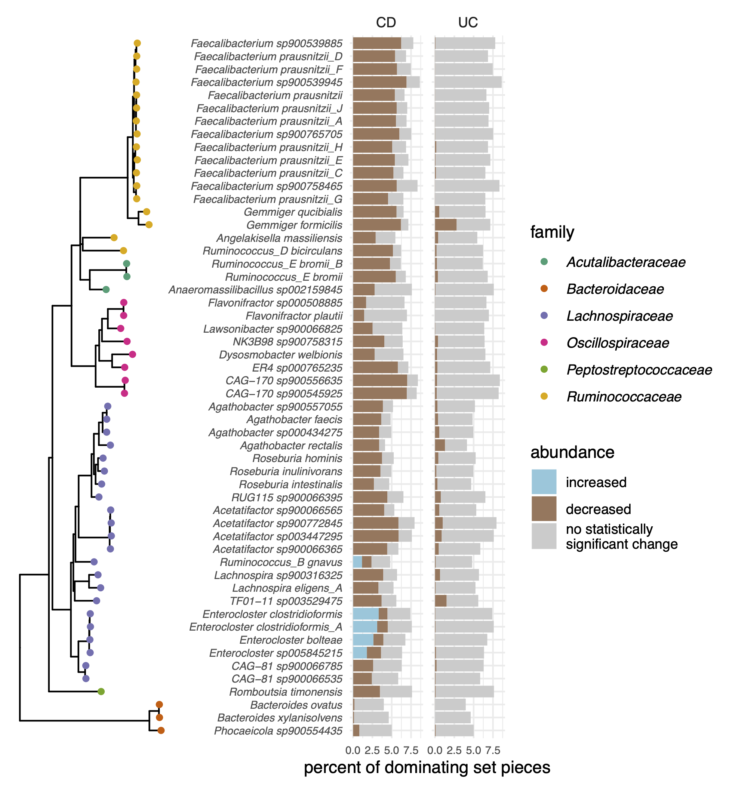

Luiz Irber 0000-0003-4371-9659
· luizirber
· luizirber
Graduate Group in Computer Science, UC Davis; Department of Population Health and Reproduction, University of California, Davis
· Funded by Grant XXXXXXXX
C. Titus Brown 0000-0001-6001-2677
· ctb
Department of Population Health and Reproduction, University of California, Davis
Abstract
Introduction
Sub-species groupings of microorganisms have functional differences that govern important genome-environment interactions across diverse ecosystems.
For example, ecotypes of Escherichia coli have different gene complements that allow each group to thrive in diverse environments like the gut, soil, and freshwater [1].
Metagenomic sequencing data from communities of microorganisms contain information about specific strains present in a sample, but strain-resolved insights are lacking due to incomplete references or inability of current tools to retrieve such information [2].
Here we use strain to refer to within-species variation that generates taxonomic grouping below the species level.
Inflammatory bowel disease (IBD) is a spectrum of diseases characterized by chronic inflammation of the intestines that is likely caused by host-mediated inflammatory responses elicited in part by microorganisms [3].
IBD is cyclical with periods of active disease and remission.
IBD manifests in three subtypes depending on clinical presentation, including Crohn’s disease (CD), which presents as discontinuous patches of inflammation throughout the gastrointestinal tract, ulcerative colitis (UC), which presents as continuous inflammation isolated to the colon, and undetermined, which cannot be distinguished as CD or UC.
Diagnosis is often clinically difficult, with ramifications associated with over- or under-treatment that lead to decreased patient well-being.
Detection of microbial signatures associated with IBD subtype may lead to improved diagnostic criteria and therapeutics that extend periods of remission.
However, such signatures have thus far remained elusive [4].
The microbiome of CD and UC is heterogeneous, and studies that characterize the microbiome often produce conflicting results [4].
This is likely in part driven by large inter- and intra-individual variation [5], but is also attributable to non-standardized laboratory, sequencing, and analysis techniques used to profile the gut microbiome [4].
Dysbiosis is frequently observed in IBD, particularly in CD [6,7,8,9,10], however dysbiosis alone is not a signature of IBD [5].
Dysbiosis is defined as a decrease in gut microbial diversity that results in an imbalance between protective and harmful microorganisms, leading to intestinal inflammation [11].
Strain-level differences may account for some heterogeneity in IBD gut microbiome profiles.
A recent investigation of time-series gut microbiome metagenomes found that one clade of Ruminococcus gnavus is enriched in CD [12].
Further, this clade produces an inflammatory polysaccharide [13].
While this clade is enriched in CD, its enrichment was previously masked from computational discovery by concomitant decreases in other Ruminococcus species in IBD [12], highlighting the need for strain-resolved analysis of metagenomic sequencing in the exploration of IBD gut microbiomes.
Given these features of the IBD gut microbiome, strain-resolved analysis may improve insights into the dynamics of these communities.
The two biggest obstacles to strain-level analysis of short read data are data getting thrown away, either because it’s not in reference databases or because it doesn’t assemble or bin, and resolving genomes from communities with mixed populations of closely related but distinct genomes.
While long reads have made strides toward resolving the latter issue (CITE: Bickhart), in habitats like the gut where communities are dominated by single strains of microbes [14], the largest barrier to strain-level analysis is using all of the data.
Here, we combine k-mer-based analysis with assembly graphs to not throw away the data.
K-mers, words of length k in nucleotide sequences, have previously been used for annotation-free characterization of sequencing data [15,16,17].
K-mers are suitable for strain-resolved metagenome analysis because they do not need to be present in reference databases to be included in analysis, they do not rely on marker genes which are largely conserved at the strain level, and they are suitable for species- and strain-level classification [18] (CITE: gather).
Investigating all k-mers in metagenomes is more computationally intensive than reference-based approaches [19], but data-reduction techniques like FracMinHash sketching make k-mer-based analysis scalable to large-scale sequence comparisons [20,21].
MinHash sketching sacrifices the fine-scaled resolution of reference-based techniques but is representative of the full sequencing sample and complete databases (CITE: gather), including strain-variable accessory elements that may be associated with diseases.
Assembly graphs complement sketch-based analysis [22,23].
While both k-mers and assembly graphs can be used to represent all sequences contained within a metagenome, assembly graphs retain important sequencing context and known functional and taxonomic annotations, recovering critical information lost through the MinHash sketching approach.
While assembly graphs have been leveraged in metagenome analyses [25], their large size precluded analysis at scale.
The spacegraphcats tool is designed to tackle this issue, encoding algorithms that scalably reduce the size of an assembly graph, enabling efficient querying and sequence retrieval [22].
These algorithms center around dominating sets, a subset of nodes that ensure that every node in the assembly graph is at most distance one from a node in the dominating set.
Dominating sets partition the graph into pieces by assigning every node to exactly one of the closest nodes in the dominating set [22].
This simplified graph enables efficient queries: querying with a sequence that overlaps at least one k-mer in a compact de Bruijn graph (cDBG) node returns all k-mers (or all reads containing those k-mers) from the graph piece.
We refer to sequences retrieved by a graph query as neighborhoods[22].
Genome queries often recover sequences not in reference databases or de novo assemblies, which disproportionately include sequences from low coverage regions or highly variable portions of the graph (e.g. sequencing reads that don’t assemble or bin) [22].
When a query has a Jaccard similarity between 10-2 and 10-3, 20-40% of a target genome sequence is recovered from a metagenome query [22].
This jumps to >80% when Jaccard similarity exceeds 10-1[22].
Here we develop k-mer- and assembly graph-based techniques to perform a meta-cohort analysis of six studies of IBD gut metagenome cohorts comprising 260 CD, 132 UC and 213 healthy controls (see Table ??)) [5,8,10,12,26,27].
SUMMARY OF TECHNIQUES WE BUILT?
LOOCV on FracMinHash signatures from quality controlled metagenome data
Identification of consistent cross-study and cross-model signatures
Gather to anchor to genomes
SGC R1 nbhd queries to recover variable regions not in reference databases, and unite all the retrieved sequences under an organizing umbrella species
SGC R10 metapangenome graphs
Dominating set differential abundance analysis
Using these approaches, we demonstrate a weak but consistent signature of IBD subtype in fecal microbiome metagenomes.
Only a small subset of all k-mers are predictive of UC and CD, and these k-mers originate from a core set of microbial genomes.
We find that stochastic loss of diversity in this core set of microbial genomes is a hallmark of CD, and to a lesser extent, UC.
While reduced diversity is responsible for the majority of disease signatures, we find signatures of strain switches that occur in disease.
Genes presumably associated with these strains occur more frequently in IBD metagenomes but are present in low abundance in nonIBD as well.
Our approach provides a solution for strain-level analysis of short read metagenomic data sets, and our findings provide future avenues for research into IBD therapeutics.
Results
Figure 1:Overview of the metagenome analysis technique used in this paper. Steps that are outlined in grey were developed in this paper. Step 1: Using quality controlled sequencing reads from many metagenomes, we decomposed reads into k-mers and subsample these k-mers using FracMinHash, thereby selecting k-mers that evenly represent the sequence diversity within a sample. We then identified interesting k-mers using random forests, and associate these k-mers with genomes in reference databases. Step 2: For each metagenome, we constructed a compact de Bruijn assembly graph that contains all k-mers from a metagenome. We used dominating sets to carve the graph into pieces. We queried this graph with genomes associated with interesting k-mers identified in Step 1, recovering sequence diversity nearby in the assembly graph. We refer to these sequences as genome query neighborhoods. Step 2 is the workflow published in [22]. Step 3: We combined genome query neighborhoods for a single genome from all metagenomes. We constructed a compact de Bruijn assembly graph from these sequences, and used a dominating set with a large radius to carve the graph into large pieces. Here, we diagram construction of R=2 dominating set pieces, but in practice we used R=10. We estimated the abundance of k-mers in each metagenome for each dominating set piece, and used these abundances to perform differential abundance analysis.
K-mers are weakly predictive of IBD subtype
Table 1: Six IBD shotgun metagenome sequencing cohorts used in this meta-cohort analysis.
We developed a reference-free pipeline to fully characterize gut metagenomes of IBD patients (Figure 1).
After consistent pre-processing, we used FracMinHash sketching to produce subsampled k-mer abundance profiles of metagenomes that reflect the sequence diversity in a sample [20] (CITE: Gather), and used these profiles to perform metagenome-wide k-mer association with IBD subtype.
We refer to FracMinHash sketches as signatures, and for simplicity, continue referring to the sub-sampled k-mers in a signature as k-mers.
In total, we profiled 7,376,151 subsampled k-mers across all samples in all cohorts, representing approximately 14 billion total k-mers.
We detected variation due to IBD diagnosis in k-mer profiles of gut metagenomes from different cohorts.
We calculated pairwise distance matrices using jaccard distance and angular distance between k-mer profiles, where jaccard distance captured sample richness and angular distance captured sample diversity.
We performed principle coordinate analysis and PERMANOVA with these distance matrices (Figure 2 A), using the variables study accession, diagnosis, library size, and number of k-mers observed in a sample (Figure 2 A).
Number of k-mers observed in a sample accounted for the highest variation, possibly reflecting reduced diversity in stool metagenomes of CD and UC patients (reviewed in [28]).
Study accounted for the second highest variation, emphasizing that technical artifacts can introduce strong signals that may influence heterogeneity in results across IBD microbiome studies but that can be mitigated through meta-cohort analysis [29].
Diagnosis accounted for a similar amount of variation as study, indicating that there is a small but detectable signal of IBD subtype in stool metagenomes.
To evaluate whether the variation captured by diagnosis is predictive of IBD subtype, we built random forests classifiers to predict CD, UC, or nonIBD subtype.
Random forests is a supervised learning classification model that estimates how predictive k-mers are of IBD subtype, and weights individual k-mers as more or less predictive using a metric called variable importance.
To assess whether disease signatures generalize across study populations, we used a leave-one-study-out cross-validation approach where we built and optimized a classifier using five cohorts and validated on the sixth.
We built each model six times, using a different random seed each time, to hone in on cross-study and cross-model signal.
Given the high-dimensional structure of this data set (e.g. many more k-mers than metagenomes), we first used variable selection to narrow the set of predictive k-mers in the training set [30,31].
Variable selection reduced the number of k-mers used in each model by two orders of magnitude, from 7,376,151 to 28,684-41,701 (mean = 35,673.1, sd = 4090.3) (Figure 2 B).
Using this reduced set of k-mers, we then optimized each random forests classifier on the training set, producing 36 optimized models.
We validated each model on the left-out study.
The accuracy on the validation studies ranged from 49%-77% (Figure 2 B), outperforming a previously published model built on metagenomic data alone [26].
Figure 2:Long nucleotide k-mers retain information about IBD subtype classification.A. Principal coordinate analysis of distance matrices obtained from comparing FracMinHash signatures with abundances and PERMANOVA results that explain the variance. Number of k-mers refers to the number of k-mers in a signature, while library size refers to the number of raw reads per sample. All test were significant at p < .001. B. Random forests models built on FracMinHash signatures predicted IBD subtype better than chance. Variable selection reduced the number of k-mers used to build each model, and model performance varied by validation study.
To understand which genomes were responsible for disease signatures detected by our models, we anchored k-mers in the models against genomes in reference databases using sourmash gather (CITE: gather).
Sourmash gather determines the minimum set of genomes in database necessary to cover all of the k-mers in a query (CITE: Gather).
We used the GTDB rs202 representatives database, which contains bacterial and archaeal genomes, and the GenBank viral, fungal, and protozoa databases.
We found that a substantial fraction of genomes were shared between models, indicating there is a consistent biological signal captured among classifiers.
Of 3,889 total genomes detected across all classifiers, 360 genomes were shared between all classifiers (Figure 3).
The presence of shared k-mers between classifiers indicates that there is a weak but consistent biological signal in metagenomes for IBD subtype between cohorts.
K-mers that anchored to these shared genomes represented 65% of all k-mers used to build the optimized classifiers, but accounted for an outsize proportion of variable importance in the optimized classifiers.
After normalizing variable importance across classifiers, 76% of the total variable importance was held by these k-mers.
These k-mers contribute a large fraction of predictive power for classification of IBD subtype, and the genomes in which they are found represent a microbial core that contains predictive power in IBD subtype classification.
Given that 360 genomes anchored the majority of k-mers and variable importance across all models, we were curious whether a smaller number of genomes could still retain the majority of variable importance.
Limiting genomes to those that could hold at least 1% of the normalized variable importance, we found that 54 genomes accounted for 50% of the variable importance (Figure 3).
We assume these genomes represent the strongest candidates for discriminating IBD subtype and focused on them for the remainder of our analyses.
Figure 3:Phylogenetic tree of 360 bacterial species that were predictive of IBD subtype in all models. Tree was built from the GTDB rs202 tree with all tips except those represented by the 360 genomes removed. Tree tips are labelled by genomes that anchored at least 1% of the normalized variable importance. The inner ring annotates the rank of the genomes, with the genome holding the most normalized variable importance across models ranked as 1. The outer ring is the species name with the GTDB database.
Genome queries into metagenome assembly graphs recover nieghborhoods of sequence variation and establish species umbrellas
While we were able to identify the majority of k-mers that were important for predicting IBD subtype, 26% of k-mers remained unannotated.
We hypothesized that these k-mers represented strain variable sequences not in reference databases but belonging to species represented by annotated k-mers.
To test this hypothesis, we performed genome queries on assembly graphs of each metagenome using the 54 candidate genomes that discriminated IBD subtype (Figure 1).
Assembly graph genome queries recover sequences in a metagenome that match the query, as well as those that are nearby in the assembly graph (Figure 1) [22].
The resulting genome query neighborhood contains all reads in the metagenome that encode these sequences.
Figure 4:Alluvial plot of .
IBD gut microbiomes have decreased diversity in strict anaerobes that is punctuated by strain switches for some facultative anaerobes
After recovering all sequences in metagenomes in the neighborhoods of the species that discriminate IBD subtypes, we next sought to determine the specific genome segments that were differentially abundant in IBD.
Differential abundance analysis is a common step in metagenome analysis, however it is typically applied to gene counts (CITE), which require assembly or mapping prior to abundance estimation.
To avoid assembly or mapping and the accompanying loss of reads (CITE), we developed an abundance estimation approach that works directly on the assembly graphs, enabling differential abundance analysis directly on the assembly graph.
Our abundance estimation approach was based on R-dominating sets, an algorithm introduced in (CITE: SGC) that efficiently computes the dominating nodes in a cDBG so that every node is no more that distance R from a dominator.
The dominating set is used to carve the graph into pieces, each of which contains one dominating node.
Here, we first build a species-level assembly graph that contains all genome query neighborhood sequences from every metagenome, which we call a metapangenome graph.
We then partition the graph into pieces using a large radius (R = 10).
The large radius carves the graph int pieces that average XX k-mers in size (Supplementary XX), enabling meaningful comparisons between groups; we aimed for a piece size similar to the average bacterial gene length of 1000 base pairs (CITE).
We next estimated the abundance of each piece within each metagenome using average k-mer abundance.
We also annotated the graph pieces using XXX.
Using this information, we performed dominating set differential abundance analysis using corncob, a statistical package that tests for differential relative abundance in the presences of variable sequencing depth and excessive zeroes for unobserved observations (CITE: corncob), a condition which occurs in abundances from dominating sets (Supplementary XX).
We applied this method for each of our genome queries, building 54 metapangenome graphs and performing dominating set differential abundance analysis on each.
Given that corncob fits a model for each dominating set piece and therefore does not require abundance information for all pieces (CITE: corncob), and given that we sought differences that characterized the majority of our samples within a group, we tested for differential abundance in pieces that occurred in at least 100 metagenomes.
On average, this condition was met in XX% of dominating set pieces.
Figure 5:Dominating set differential abundance analysis revealed genome segments that were significantly different in CD and UC compared to nonIBD.
We found that the majority of species decreased in abundance in CD, and to a lesser extent, UC (Figure 5).
The majority of these species are strictly anaerobic (Figure 5), so their decreased abundance is consistent with a shift toward oxidative stress during disease that is intolerable for many gut microbes [32].
Many of these species are generally regarded as beneficial bacteria.
For example, nine of the 54 species we investigated were Faecalibacterium prausnitzii, the phylogroups of which are separated in the GTDB taxonomy but combinted into a single species in the NCBI taxonomy.
F. prausnitzii a key butyrate producer in the gut, and plays a crucial role in reducing intestinal inflammation [33].
Similarly, Acetatifactor is a bile-acid producing bacteria associated with a healthy gut, but limited evidence has associated it with decreased abundance in IBD [34].
We found that four species were less likely to occur in CD, and to a lesser extent, UC.
A substantial fraction of dominating set pieces were more abundant in CD than nonIBD in the metapangenome graphs of five species (Figure).
Only the increase in the distinct accessory genes is detectable amongst the backdrop of general loss of gene abundance due to decrease in other strains.
…
Enrichment of specific metabolic pathways is consistent with functional specialization of strains in different environmental niches [35].
These four genomes annotated to Ruminococcus gnavus …
R. gnavus is an aerotolerant anaerobe, one clade of which was recently found to be enriched in CD [12], and to produce an inflammatory polysaccharide [13].
C. bolteae is a member of the normal gut microbiota but is an opportunistic pathogen that exploits compromised intestinal barriers [36].
It is associated with disturbance succession and has increased gene expression during gut dysbiosis [5,37].
Fractions of some metapangenomes are more abundant in but not exclusive to IBD
ORPHEUM/PANMERS ANALYSIS FOR STRAIN SWITCHERS
Given the signatures of strain enrichment we detected in metagenomes from CD and UC, we next investigated whether there is a disease-specific metapangenome in CD or UC – i.e., whether there are genes from a species that are only observed in IBD.
To perform this anlysis in an assembly-free way, we used a recently developed approach that predicts open reading frames directly from short sequencing reads and then uses protein k-mers from those reads to estimate pangenomes (CITE: panmers).
We generated standard pangenome metrics from reads from query genome neighborhoods.
In general, we found no evidence for disease-specific pangenomes among the XX pangenomes.
Instead, in almost all pangenomes all protein k-mers are observed in at least some CD, UC, and nonIBD metagenomes.
On average, XX protein k-mers were unobserved in UC, XX in CD, and XX in nonIBD per metapangenome, accounting for less than 1% of protein k-mers in the complete metapangenome (Table XX).
These results in part explain heterogeneous study findings in previous IBD gut microbiome investigations.
Discussion
IBD
IBD is a heterogeneous disease characterized by periods of activity and remission.
While the underlying etiology remains poorly understood, IBD arises from a complex interaction between host genetics, environment, and the gut microbiome.
Here we present a new method to examine microbial associations of disease, and using this method, uncover signatures of IBD subtype.
These signatures demonstrate consistent loss of diversity of specific microorganisms, particularly in CD.
Meanwhile, our analysis was consistent with strain enrichment in four species in CD.
The conserved signatures we detect warrant further research and may yield new diagnostics and therapeutics for IBD treatment.
While we found conserved signatures in IBD subtype, we found no evidence for disease-specific microbiomes, or pangenomes of the organisms that comprise them.
The observation that almost all genes within a pangenome occur in CD, UC, and nonIBD suggests the presence of ecotypes – subspecies that are adapted to different environments – rather than pathotypes – subspecies associated with a specific disease.
Similarly, while a few strains appear to be enriched in IBD microbiomes, these strains were all detected in nonIBD at low frequency.
These patterns in part explain the inconsistent results generated in IBD subtype characterization, where no consistent microbiological signal has emerged in human gut microbiomes other than loss of diversity (reviewed in [kumar2019integrating?]).
However, the results presented herein demonstrate the need for reference-free analysis of metagenomes.
Strain-level resolution was essential for the detection of enriched organisms, but this resolution is precluded by reference-based methods.
Recent large-scale assembly efforts have dramatically improved our catalog of diversity for human microbiomes [pasolli2019?,nayfach2019?,almeida2019?], however many sequences that were signatures of IBD were not in these databases.
K-mer-based analysis combined with assembly graph queries provides a necessary window into strain-level dynamics in metagenomes.
Our models consistently performed the most poorly on the iHMP cohort.
The iHMP tracked the emergence and diagnosis of IBD through time series profiling of emergent cases [lloyd2019?].
We selected the first sample in each time series for this analysis.
Given that our model performed poorly on these samples, this may suggest that disease onset is a distinct biological process.
One avenue of future research is analysis of these time series samples for emergence of disease signatures.
While k-mer-based analysis revealed signatures of IBD subtype, 9.1% of shared k-mers were uncharacterized by reference databases or assembly graph queries.
These k-mers may represent strain variants of the microbial core we detected, or may be novel sequences from other organisms, plasmids, or viruses.
Targeted graph-based queries may reveal the identity of these elements and their relationship to IBD.
Method
While we apply our pipeline to IBD classification, it is extensible to other large meta cohorts of metagenomic sequencing data.
This method may be particularly suitable for diseases such as colorectal cancer, where a recent meta-analysis using a marker gene approach was successful in classifying colorectal samples from healthy controls [wirbel2019?].
Our method may bring strain-level resolution and generate hypothesis for further research.
While we selected random forests to identify k-mers that discriminate IBD subtype, other machine learning methods may provide better classification accuracy.
In this study, we prioritized the interpretability of our models over accuracy.
Additionally, while we used long nucleotide k-mers (k = 31), k-mers from protein or reduced alphabets may improve accuracy.
Protein k-mers XXX and were recently shown to XXX.
Given that long k-mers of are species specific (CITE: metapalette, tessa?), nucleotide k-mers may maximize strain or species specific differences, may not be as well suited to disease classification.
This remains an area of future research.
The first part of the pipeline is diconnectable from the second part of the pipeline – that is, the discovery of potentially discriminatory genomes between groups is not a prerequisite for dominating set differential abundance analysis as these genomes could be selected arbitrarily.
The methods presented here are applicable to metagenome analysis for samples originating from diverse environments.
The theoretical requirements for the application of dominating set differential abundance are sufficient samples for statistical testing (e.g., a minimum of three cases and three controls, with the typical caveats associated with detected statistically significant differences from small sample sizes as has been extensively explored in the context of differential expression analysis (CITE)) and a reference genome or metagenome-assembled genome bin to query with, and sufficient compute resources to run spacegraphcats (CITE SGC).
These requirements make the application of dominating set differential abundance analysis available to metagenomes from diverse environments, not just the well-studied human gut microbiome.
assembly graphs are rising in popularity as they accomodate the representation of pangenomic variants present outside of reference genomes.
assembly graphs can be built with a combination of long and short reads or from long or short reads alone, so dominating set differential abundance analysis is a flexible method to compare groups of metagenomes that will accommodate the field as metagenome sequencing continues to improve
the framework is theoretically extensible to metatranscriptomes, but this remains a point of future research
Methods
All code associated with our analyses is available at www.github.com/dib-lab/2020-ibd/.
IBD metagenome data acquisition and processing
We searched the NCBI Sequence Read Archive and BioProject databases for shotgun metagenome studies that sequenced fecal samples from humans with Crohn’s disease, ulcerative colitis, and healthy controls.
We included studies sequenced on Illumina platforms with paired-end chemistries and with sample libraries that contained greater than one million reads.
For time series intervention cohorts, we selected the first time point to ensure all metagenomes came from treatment-naive subjects.
We downloaded metagenomic FASTQ files from the European Nucleotide Archive using the “fastq_ftp” link and concatenated fast files annotated as the same library into single files.
We also downloaded iHMP samples from idbmdb.org.
We used Trimmomatic (version 0.39) to adapter trim reads using all default Trimmomatic paired-end adapter sequences (ILLUMINACLIP:{inputs/adapters.fa}:2:0:15) and lightly quality-trimmed the reads (MINLEN:31 LEADING:2 TRAILING:2 SLIDINGWINDOW:4:2) [38].
We then removed human DNA using BBMap and a masked version of hg19 (CITE).
Next, we trimmed low-abundance k-mers from sequences with high coverage using khmer’s trim-low-abund.py[39].
Using these trimmed reads, we generated scaled MinHash signatures for each library using sourmash (k-size 31, scaled 2000, abundance tracking on) [40].
Scaled MinHash sketching produces compressed representations of k-mers in a metagenome while retaining the sequence diversity in a sample [20].
This approach creates a consistent set of k-mers across samples by retaining the same k-mers when the same k-mers were observed.
This enables comparisons between metagenomes.
We refer to scaled MinHash sketches as signatures, and to each sub-sampled k-mer in a signature as a k-mer.
At a scaled value of 2000, an average of one k-mer will be detected in each 2000 base pair window, and 99.8% of 10,000 base pair windows will have at least one k-mer representative.
We selected a k-mer size of 31 because of its species-level specificity [18].
We retained all k-mers that were present in multiple samples.
Principle Coordinates Analysis
We used jaccard distance and cosine distance implemented in sourmash compare to pairwise compare scaled MinHash signatures.
We then used the dist() function in base R to compute distance matrices.
We used the cmdscale() function to perform principle coordinate analysis [41].
We used ggplot2 and ggMarginal to visualize the principle coordinate analysis [42].
To test for sources of variation in these distance matrices, we performed PERMANOVA using the adonis function in the R vegan package [43].
The PERMANOVA was modeled as ~ diagnosis + study accession + library size + number of k-mers.
Random forests classifiers
We built random forests classifiers to predict CD, UC, and non-IBD status using scaled MinHash signatures .
We transformed sourmash signatures into a k-mer (hash) abundance table where each metagenome was a sample, each k-mer was a feature, and abundances were recorded for each k-mer for each sample.
We normalized abundances by dividing by the total number of k-mers in each scaled MinHash signature.
We then used a leave-one-study-out validation approach where we trained six models, each of which was trained on five studies and validated on the sixth.
We built each model six times, each time using a different random seed.
To build each model, we first performed vita variable selection on the training set as implemented in the Pomona and ranger packages [31,44].
Vita variable selection reduces the number of variables (e.g. k-mers) to a smaller set of predictive variables through selection of variables with high cross-validated permutation variable importance [30].
It is based on permutation of variable importance, where p-values for variable importance are calculated against a null distribution that is built from variables that are estimated as non-important [30].
This approach retains important variables that are correlated [30,45], which is desirable in omics-settings where correlated features are often involved in a coordinated biological response, e.g. part of the same operon, pathways, or genome [46,47].
Using this smaller set of k-mers, we then built an optimized random forests model using tuneRanger [48].
We evaluated each validation set using the optimal model, and extracted variable importance measures for each k-mer for subsequent analysis.
To make variable importance measures comparable across models, we normalized importance to 1 by dividing variable importance by the total number of k-mers in a model and the total number of models.
Anchoring predictive k-mers to genomes
We used sourmash gather with parameters k 31 and --scaled 2000 to anchor predictive k-mers to known genomes [40].
Sourmash gather searches a database of known k-mers for matches with a query (CITE: gather paper).
We used the sourmash GTDB rs202 representatives data base (https://osf.io/w4bcm/download).
To calculate the cumulative variable importance attributable to a single genome, we used an iterative winner-takes-all approach.
The genome with the largest fraction of predictive k-mers won the variable importance for all k-mers contained within its genome.
These k-mers were then removed, and we repeated the process for the genome with the next largest fraction of predictive k-mers.
To genomes that were predictive in all models, we took the union of predictive genomes from the 36 models.
We filtered this set of genomes to contain only those genomes with a cumulative normalized variable importance greater than 1%.
R dominating sets
The original spacegraphcats publication defined the dominating set as a set of nodes in the cDBG such that every node is a distance-1 neighbor of a node in the dominating set [22].
However, the algorithms as implemented allow this distance to be flexible and tunable [22].
We refer to the largest distance that any node may be from a member of the dominating set as the radius, R.
Increasing the radius increases the average piece size while reducing the total number of pieces in the graph.
Genome neighborhood queries with spacegraphcats
To recover sequence variation associated with genomes that were correlated with IBD subtype, we used spacegraphcats search to retrieve k-mers in the compact de Bruijn graph neighborhood of each genomes (k = 31, R = 1) [22].
We then used spacegraphcats extract_reads to retrieve the reads and extract_contigs to retrieve unitigs in the compact de Bruijn graph that contained those k-mers, respectively.
Construction of the metapangenome graph
After retrieving genome neighborhood sequences from each metagenome, we combined these sequences to build a single metapangenome graph (R = 10, k = 31).
We increased the radius size of the metapangenome graph to produce larger level 1 dominating set pieces and to overcome highly articulated cDBGs resulting from an abundance of sequencing data.
While working with single-species metapangenome graphs from many metagenomes reduced the graph size compared working with complete metapangenome graphs, we performed two preprocessing steps prior to the metapangenome graph generation.
We combined all genome query neighborhood reads and performed digital normalization and then truncated reads at k-mer that was not present in the dataset at least 4 time
These are heuristic steps that we believe are unlikely to remove biologically important sequences.
Annotating the metapangenome graph
TBD on if the PFAM stuff works.
Calculating abundances metagenome abundances of dominating set nodes in the metapangenom graph
We calculated k-mer abundances for each graph piece in the level 1 dominating set.
Performing dominating set differential abundance analysis
We used Corncob to perform dominating set differential abundance analysis [49].
Corncob tests for differential relative abundance in the presence of variable sequencing depth and excessive zeroes for unobserved observations, conditions which occur in abundances from dominating sets [49].
To focus on the most common sequencing variants and to reduce runtimes, we first filtered to dominating set pieces that were present in at least 100 (16.5%) metagenomes; corncob fits a model to each dominating set piece, so it does not require abundance information for all pieces.
We performed differential abundance testing using the bbdml() function using a likelihood ratio test with formula = ~ study_accession + diagnosis and formula_null = ~study_accession.
We estimated the number of k-mers in the quality controlled metagenome reads using ntcard and used this as the denominator.
We performed Bonferroni p value correction and used a significance cut off of 0.05.
Metapangenome analysis
TBD
References
1.
Genome sequencing of environmental Escherichia coli expands understanding of the ecology and speciation of the model bacterial species
C Luo, ST Walk, DM Gordon, M Feldgarden, JM Tiedje, KT Konstantinidis
Multi-omics of the gut microbial ecosystem in inflammatory bowel diseases
Jason Lloyd-Price, Cesar Arze, Ashwin N Ananthakrishnan, Melanie Schirmer, Julian Avila-Pacheco, Tiffany W Poon, Elizabeth Andrews, Nadim J Ajami, Kevin S Bonham, Colin J Brislawn, … IBDMDB Investigators
A decrease of the butyrate-producing species <i>Roseburia hominis</i> and <i>Faecalibacterium prausnitzii</i> defines dysbiosis in patients with ulcerative colitis
Kathleen Machiels, Marie Joossens, João Sabino, Vicky De Preter, Ingrid Arijs, Venessa Eeckhaut, Vera Ballet, Karolien Claes, Filip Van Immerseel, Kristin Verbeke, … Séverine Vermeire
Inflammation, Antibiotics, and Diet as Environmental Stressors of the Gut Microbiome in Pediatric Crohn’s Disease
James D Lewis, Eric Z Chen, Robert N Baldassano, Anthony R Otley, Anne M Griffiths, Dale Lee, Kyle Bittinger, Aubrey Bailey, Elliot S Friedman, Christian Hoffmann, … Frederic D Bushman
Genetic risk, dysbiosis, and treatment stratification using host genome and gut microbiome in inflammatory bowel disease
Ahmed Moustafa, Weizhong Li, Ericka L Anderson, Emily HM Wong, Parambir S Dulai, William J Sandborn, William Biggs, Shibu Yooseph, Marcus B Jones, Craig J Venter, … Brigid S Boland
Gut microbiome structure and metabolic activity in inflammatory bowel disease
Eric A Franzosa, Alexandra Sirota-Madi, Julian Avila-Pacheco, Nadine Fornelos, Henry J Haiser, Stefan Reinker, Tommi Vatanen, ABrantley Hall, Himel Mallick, Lauren J McIver, … Ramnik J Xavier
The Treatment-Naive Microbiome in New-Onset Crohn’s Disease
Dirk Gevers, Subra Kugathasan, Lee A Denson, Yoshiki Vázquez-Baeza, Will Van Treuren, Boyu Ren, Emma Schwager, Dan Knights, Se Jin Song, Moran Yassour, … Ramnik J Xavier
Meta-analysis of fecal metagenomes reveals global microbial signatures that are specific for colorectal cancer
Jakob Wirbel, Paul Theodor Pyl, Ece Kartal, Konrad Zych, Alireza Kashani, Alessio Milanese, Jonas S Fleck, Anita Y Voigt, Albert Palleja, Ruby Ponnudurai, … Georg Zeller
Paul I Costea, Luis Pedro Coelho, Shinichi Sunagawa, Robin Munch, Jaime Huerta‐Cepas, Kristoffer Forslund, Falk Hildebrand, Almagul Kushugulova, Georg Zeller, Peer Bork
The khmer software package: enabling efficient nucleotide sequence analysis
Michael R Crusoe, Hussien F Alameldin, Sherine Awad, Elmar Boucher, Adam Caldwell, Reed Cartwright, Amanda Charbonneau, Bede Constantinides, Greg Edvenson, Scott Fay, … CTitus Brown
Jari Oksanen, FGuillaume Blanchet, Michael Friendly, Roeland Kindt, Pierre Legendre, Dan McGlinn, Peter R Minchin, RB O'Hara, Gavin L Simpson, Peter Solymos, … Helene Wagner
![Figure 1: Overview of the metagenome analysis technique used in this paper. Steps that are outlined in grey were developed in this paper. Step 1: Using quality controlled sequencing reads from many metagenomes, we decomposed reads into k-mers and subsample these k-mers using FracMinHash, thereby selecting k-mers that evenly represent the sequence diversity within a sample. We then identified interesting k-mers using random forests, and associate these k-mers with genomes in reference databases. Step 2: For each metagenome, we constructed a compact de Bruijn assembly graph that contains all k-mers from a metagenome. We used dominating sets to carve the graph into pieces. We queried this graph with genomes associated with interesting k-mers identified in Step 1, recovering sequence diversity nearby in the assembly graph. We refer to these sequences as genome query neighborhoods. Step 2 is the workflow published in [22]. Step 3: We combined genome query neighborhoods for a single genome from all metagenomes. We constructed a compact de Bruijn assembly graph from these sequences, and used a dominating set with a large radius to carve the graph into large pieces. Here, we diagram construction of R=2 dominating set pieces, but in practice we used R=10. We estimated the abundance of k-mers in each metagenome for each dominating set piece, and used these abundances to perform differential abundance analysis.](images/ibd_overview_steps.svg)
![Figure 2: Long nucleotide k-mers retain information about IBD subtype classification. A. Principal coordinate analysis of distance matrices obtained from comparing FracMinHash signatures with abundances and PERMANOVA results that explain the variance. Number of k-mers refers to the number of k-mers in a signature, while library size refers to the number of raw reads per sample. All test were significant at p < .001. B. Random forests models built on FracMinHash signatures predicted IBD subtype better than chance. Variable selection reduced the number of k-mers used to build each model, and model performance varied by validation study.](images/kmers.png)
![Figure 3: Phylogenetic tree of 360 bacterial species that were predictive of IBD subtype in all models. Tree was built from the GTDB rs202 tree with all tips except those represented by the 360 genomes removed. Tree tips are labelled by genomes that anchored at least 1% of the normalized variable importance. The inner ring annotates the rank of the genomes, with the genome holding the most normalized variable importance across models ranked as 1. The outer ring is the species name with the GTDB database.](images/genome360.png)